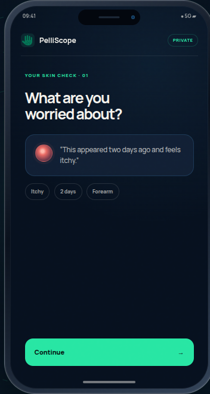
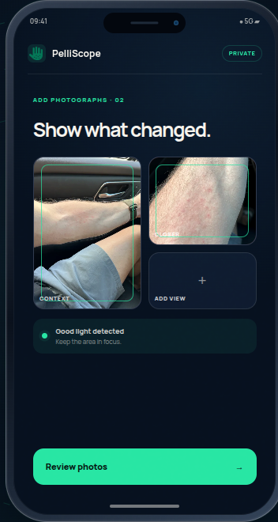
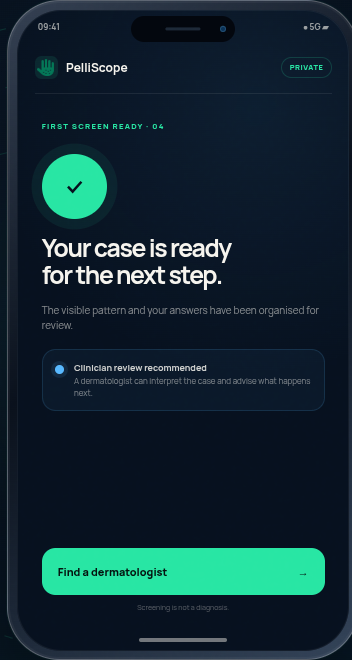
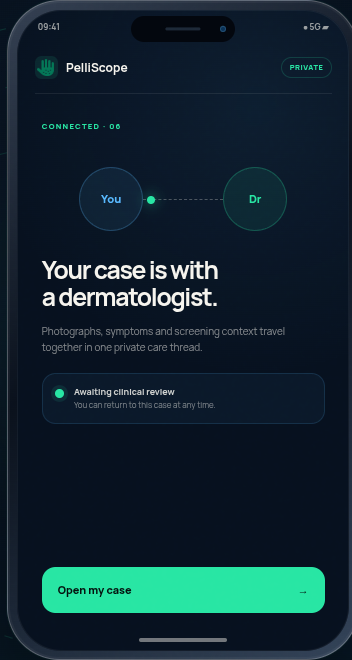
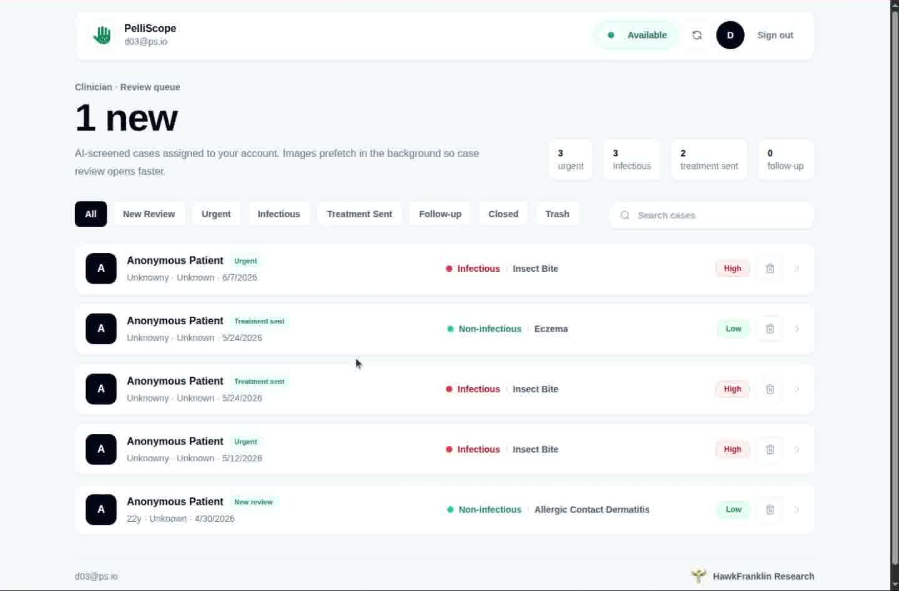

PelliScope for dermatologists & clinics
A skin concern
can arrive ready.
Guided intake, photographs and AI-assisted screening—organised before clinical review begins.
 Context
Context
 Angled
Angled
01 / Patient entry
Four moments.
One prepared case.
The patient begins on any phone. No registration wall before the first step, and no loose photos arriving without context.
AI-assisted screening supports preparation and routing. It is not a diagnosis.




02 / Prepared arrival
Before your clinical
time begins.
Images, symptoms, duration and screening context enter one review queue—already attached to the right case.

03 / Clinical review
See the case.
Keep the context.
Review protected image sets beside the patient’s complaint, history and AI-assisted screening summary.
Protected photographsInitial and follow-up image groups.
Screening contextVisible pattern and reported symptoms, ready for interpretation.
Longitudinal identityPatient ID, previous episodes and care timeline.

04 / Care decision
One review can become
continuous care.
The next step stays attached to the case instead of disappearing into separate messages and files.
05 / Practice control
Your practice
stays yours.
Professional verification, availability, patients and payment stages remain visible in one clinical workspace.
Professional profileCredentials · jurisdiction · languages
✓Returning patient2 episodes · follow-up active
Open →New patient1 prepared case
Open →06 / A clearer system
Less intake chaos.
More clinical time.
Give patients a clearer way to begin, give clinicians a prepared case, and keep the next step connected.
Clinical decisions remain with qualified professionals. Product availability and payment features vary by service region.